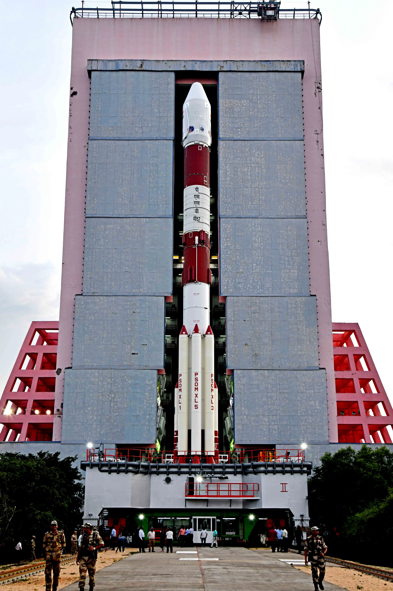
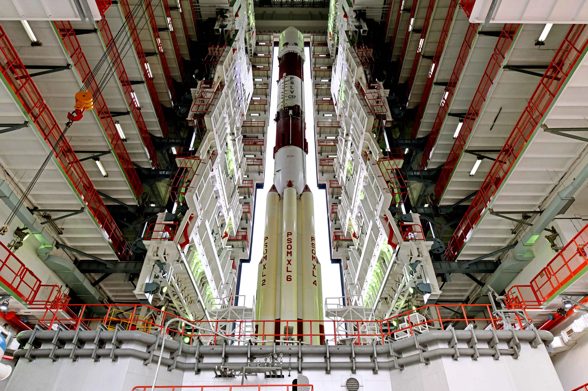
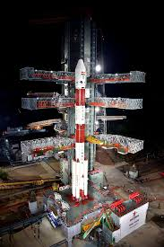
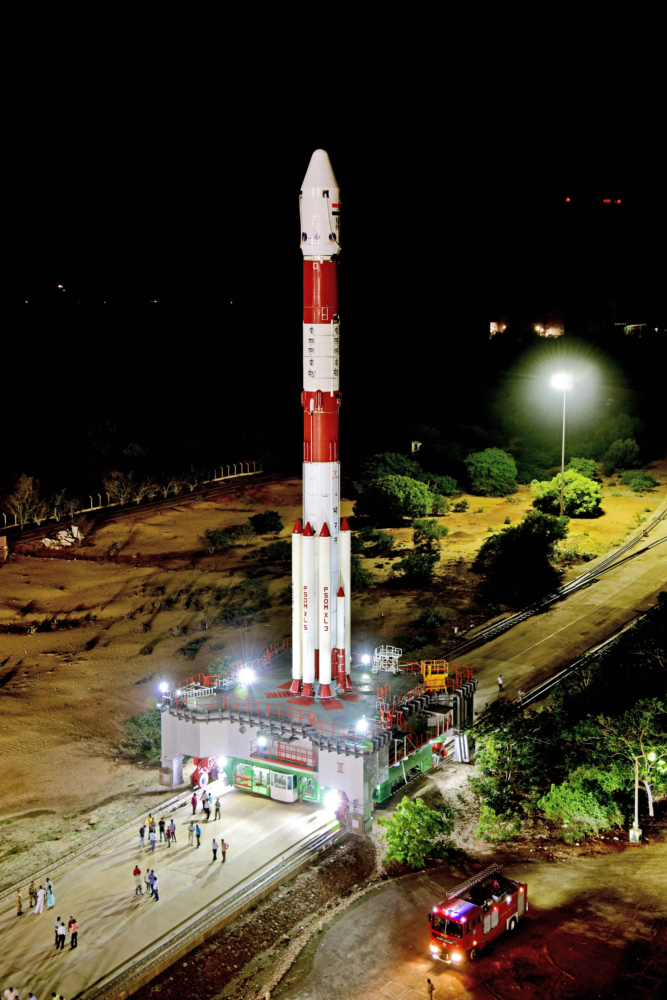
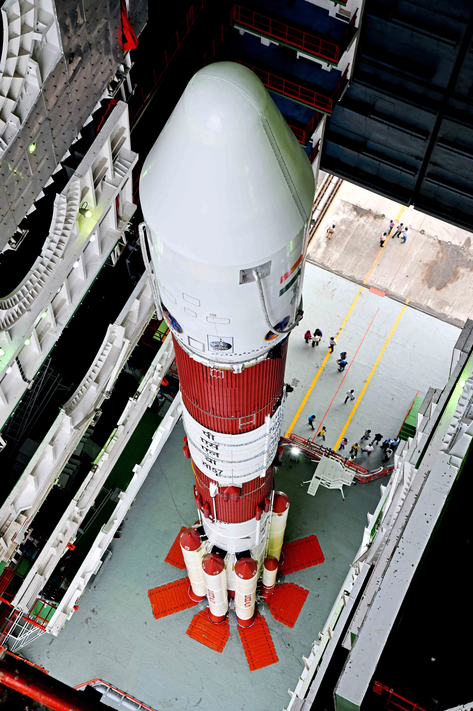

India's first dedicated solar observatory — stationed 1.5 million kilometres from Earth at the L1 Lagrange point, staring at the Sun continuously, studying its corona, solar winds, and the space weather that affects every satellite and power grid on Earth.
Watch: Aditya-L1 Launch LiveAditya-L1 — named after Aditya, the Sanskrit name for the Sun — is India's first space-based solar observatory. Launched on September 2, 2023, it reached its destination on January 6, 2024, becoming the first Indian spacecraft to operate at a Lagrange point.
The L1 point is a gravitational sweet spot between the Earth and the Sun — 1.5 million kilometres from Earth — where a spacecraft can maintain a stable position with minimal fuel expenditure. From here, Aditya-L1 has an uninterrupted, continuous view of the Sun, 24 hours a day, 365 days a year — never blocked by Earth's shadow.
This matters because the Sun is not predictable. Solar flares, coronal mass ejections, and solar wind variations can knock out satellites, disrupt GPS, overload power grids, and endanger astronauts. Aditya-L1's job is to watch, warn, and help scientists understand the star that makes all life on Earth possible.
The five Lagrange points are positions in space where the gravitational forces of two large bodies — in this case, the Sun and Earth — and the centrifugal force of an orbiting object perfectly balance. At L1, a spacecraft between the Earth and Sun is gravitationally "parked" — it requires very little thrust to maintain its position.
L1 is 1.5 million kilometres from Earth — about 1% of the Earth-Sun distance. From here, Aditya-L1 has a permanent, unobstructed view of the Sun that no Earth-based or Earth-orbiting telescope can match.
ESA's SOHO mission and NASA's ACE mission have operated at L1 for decades. Aditya-L1 joins this elite group — making India one of only a handful of nations to station a spacecraft at a Lagrange point.
On January 6, 2024, ISRO executed the final burn to insert Aditya-L1 into its halo orbit around L1. The L1 point is technically unstable — without occasional corrections, a spacecraft would slowly drift away. ISRO performs station-keeping manoeuvres every few weeks, making small thruster firings to maintain the precise halo orbit. This requires careful navigation and planning — and ISRO's mission operations team does it flawlessly.
Swipe or click arrows to browse. Click any photo to zoom.


.jpg)


.jpg)
Every command ISRO sends to Aditya-L1 at 1.5 million km, and every byte of solar data it returns, passes through the Indian Deep Space Network (IDSN) at Byalalu, Karnataka — 60 km from Bengaluru. The IDSN operates 18-metre and 32-metre parabolic dish antennas that can precisely track and communicate with spacecraft across hundreds of millions of kilometres. At 1.5 million km, data from Aditya-L1 travels at the speed of light and arrives at IDSN with a ~5-second delay — but the processing pipeline is designed for near real-time space weather alerts, meaning a solar event detected by Aditya-L1 can trigger a global warning within minutes. Without IDSN, Aditya-L1 would be silent.